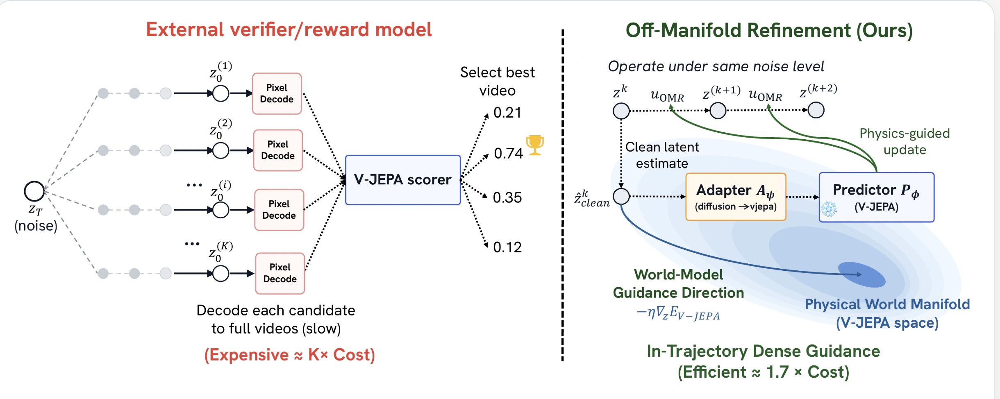

COMPUTER VISION · WORLD MODELS
Hai Nguyen-Truong.
PhD student · Northeastern
I am a PhD student in Computer Science at Northeastern University, advised by Prof. Lorenzo Torresani at FarSight Lab. I study world models for planning and anticipation, and action understanding in egocentric and exocentric video.
Previously, I earned an MPhil in Computer Science and Engineering at HKUST with Prof. Sai-Kit Yeung, and a BSc in Computer Science with highest distinction at the University of Science, VNU-HCM.
My research experience spans physics-plausible video generation at the Google-funded Fulbright AI Institute, image generation at Huawei Hong Kong Research Center, and spatiotemporal segmentation at VinAI Research (now part of Qualcomm).

TrajPilot predicts possible future camera trajectories from first-person video and uses them to guide action prediction. Motion supplies a fine-grained signal of intent, helping the model plan action sequences and anticipate what someone will do next without observing their future path.

Video generators can make convincing frames but get the physics wrong. OMR uses a frozen world model to steer a frozen video generator during a single sampling run. A small adapter connects the generator’s intermediate latents to the world model, so it can guide the video before it is finished.

VATEX is a novel method for referring image segmentation that leverages vision-aware text features to improve text understanding. By decomposing language cues into object and context understanding, the model can better localize objects and interpret complex sentences, leading to significant performance gains.

SegTransVAE is the first work exploiting the hybrid architecture between CNN, Transformers with the Variational Autoencoder (VAE) branch to the network to reconstruct the input images jointly with segmentation.
Latest news.
TrajPilot accepted at NeurIPS 2026. Our work uses predicted camera trajectories to anticipate actions from first-person video.
Started my PhD at Northeastern University.
OMR accepted at BMVC 2026; concluded my research assistantship at the Google-funded Fulbright AI Institute.
Second prize at VAIC (nearly 1,500 contestants, 340 teams) for Tangent · $5,000 cashOne week after the Mobility win, our AI-for-education project turned lectures into vivid, interactive video lessons.
First prize in Mobility at GenAI Fund’s Agentic AI Build Week (2,000 builders) · $15,000 OpenAI credits + $250,000 Microsoft startup fundThe enterprise track focused on context-aware AI for digital mobility and location intelligence.
TransCues accepted at WACV 2026.
Where I’ve worked.
Research Assistant in Computer Vision
2025.08 – 2026.08 | Fulbright AI Institute, Fulbright University Vietnam · Google-funded
- Conducted research on Video Diffusion Models, focusing on Physical Plausibility of Video Generation.
- Host weekly meeting and research seminar in our CV group.
- Assist junior student in Capstone and Thesis project on Computer Vision.
AI Research Engineer
2024.11 - 2025.04 | Huawei Hong Kong Research Center
- Contributing to MindONE project, focusing on multimodal/multitask generation models and optimizing it on Ascend NPU.
Research Resident
2022.03 - 2022.07 | VinAI Research
- Conducted research in spatio-temporal tasks: video instance/panoptic segmentation, 4D point cloud panoptic segmentation.
Honors & awards.
Academic
- 2025 Best Poster Presentation Award at AVSTC
- 2024 UGC Research Travel Grant - HKUST
- 2022-2024 Postgraduate Scholarship (PGS) - HKUST
- 2022 Merit Award for Highest Distinction
- 2022 Third Prize, EURÉKA
Competitions & Math
- 2026 First Prize, Mobility · GenAI Fund Agentic AI Build Week
- 2026 Second Prize · Vietnam AI Innovation Challenge (Tangent)
- 2023 & 2024 🥈 Runner-up - Maritime CV Workshop (WACV)
- 2020 🥇 First Prize - MediaEval Sports Video Classification
- 2021 🥇 First Prize - Ho Chi Minh AI Challenge
- 2017 & 2018 🥉 Third Prize - Vietnamese Math Olympiads
- 2015 & 2016 🥇 Gold Medal - April 30th Math Olympiad